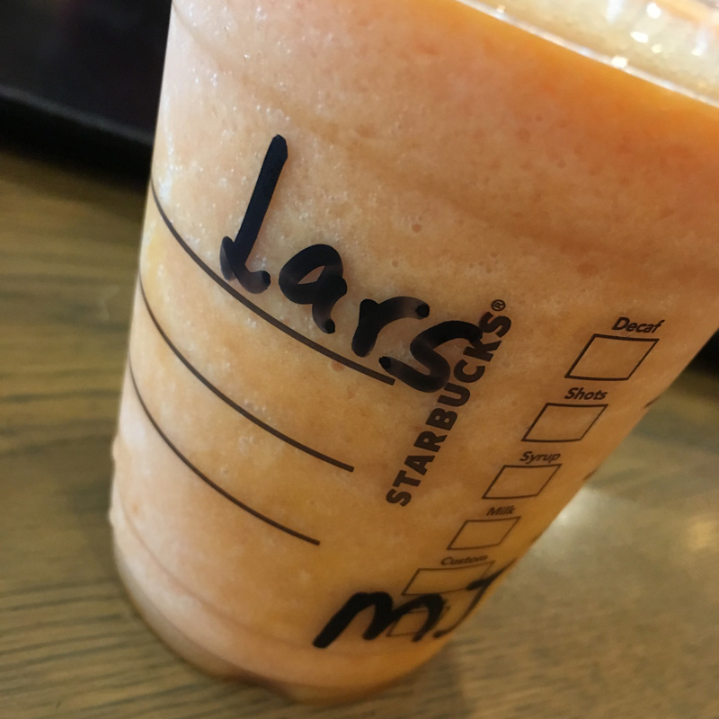

Intensiva dagar
Idag, den 16e april så befinner vi oss i Dubai. Men eftersom jag inte skrivit på ett par dagar så får vi hoppa tillbaka till Singapore!
Dag 3 i Singapore
Idag besökte vi Singapore Zoo. Eftersom vi har besökt djurparker och akvarium flera gånger tidigare under resan så behövde vi en "riktig" zoo-upplevelse där vi kunde vara längre än en timme. Tanken var att det skulle bli en halvdag, men det fanns så mycket att se så vi blev kvar där nästan hela dagen. Vi tog t-banan och bytte till buss för att ta oss dit. Singapores infrastruktur är verkligen anpassad för att kunna ta sig var som helst (nästan) när som helst, så det känns tryggt att veta att oavsett hur vilse man blir att man alltid kan ta sig tillbaka! Väl framme vid djurparken började vi köa för biljetter, men då hände något otroligt tursamt: ett par kom fram till oss och frågade om vi ville följa med in på deras gratisbiljett. Dem hade tydligen fribiljett för 4 men var bara 2 så vi fick följa med in gratis! Vi sparade 700 kronor tack vare dem! Väl inne såg vi en hel massa djur och lyckades timea flera shower/matningar av djuren också. Mycket bra dag! Vi tog sen bussen till andra sidan stan och behövde sen ta t-banan hela vägen tillbaka igen för att till slut komma hem till Mei igen. Det var inget misstag att vi tog fel buss, utan bara en misskalkyl av hur många stationer bort vi hamnade.
När vi kom hem var det hemlagad mat från Meis mamma att vänta. Mycket god kycklingcurry, lax, och bläckfisk! Efter den festmåltiden tog vi en cykeltur längs färskvattenfloden Punggol Serangoon Reservoir ut till havet där man såg över till Malaysia. Sen avslutade vi kvällen med en smoothie på ett kafé.
Dag 4 i Singapore
Idag har vi varit på kulturell rundtur, vi började dagen med att besöka Little India och deras street market, tempel, och köpcenter (specifikt Mustafa Center). Där fanns allt Indien-relaterat och lite till. I Mustafa Center fanns det en våning och en avdelning för allt man kunde tänka sig. Vi fikade på en Starbucks och nu fick baristan äntligen mitt namn rätt, men enbart för att jag bokstaverade det för henne.

Sen tog vi oss till Chinatown och shoppade lite souvernirer för de kontanter vi hade kvar. Eftersom vi hittills nästan uteslutande betalat med kort hade vi flera sedlar med låg valör kvar, så då var det bara att hitta vad som helst som kunde köpas för exakt sedelns valör. Efter turen i Chinatown begav vi oss till IKEA för att stilla vår hemlängtan, nu tror jag vi står ut resten av resan. Vi tog en tur genom IKEA och slutade med att äta köttbullar och löpa lösgodis, då kände man sig nästan som hemma. På eftermiddagen tog vi oss till Sentosa och gick runt vid Universal Studios (vilket vi kommer besöka i USA istället) och stranden. Vi besökte kontinentalasiens mest södra punkt innan vi lämnade ön. Vi avslutade sen vår Singaporevistelse med en tripp upp i "The Spaceship Building" och upplevde den coola utsikten.
Sista dagen i Singapore
Sista dagen spenderades på flygplatsen, vi åt lunch och fikade på Starbucks med Mei innan vi begav oss till andra sidan passkontrollen och lämnade landet. Denna gången gick det inte lika bra för baristan:
Vi satte oss på flyget mot Colombo, där vi landade 3 timmar senare. Där åt vi Burger King för 340 kronor FÖR TVÅ NORMALA MEAL. Verkar som de tagit den lokala valutan och sen bara bytt priserna till USD på flygplatsen, helt galet. Vi satte oss sen på flyget mot Dubai, eftersom det var en långflygning var det ett stort flygplan för en gångs skull, vilket var trevligt. Man kunde kolla en film och sitta aningen bekvämare än alla 1-timmes flyg vi tagit i Asien.
Nu är vi alltså i Dubai, landet där allting är dyrt. Men det återkommer jag med en annan dag!